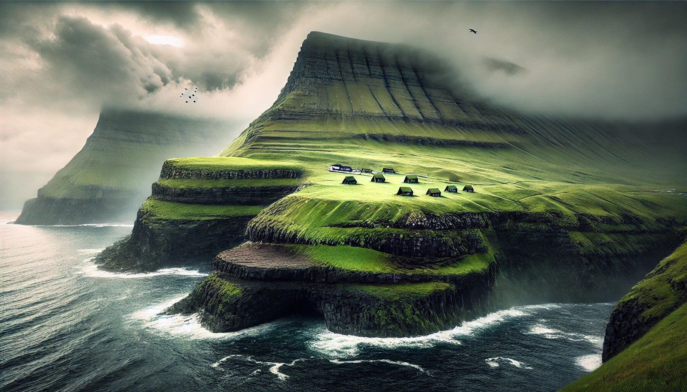
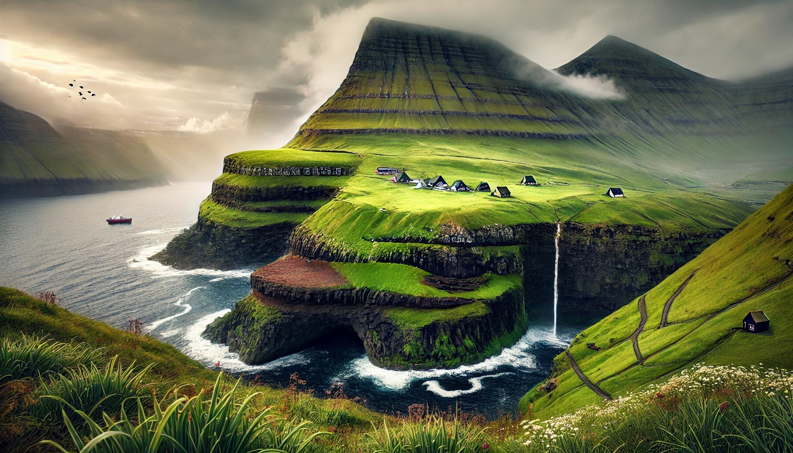
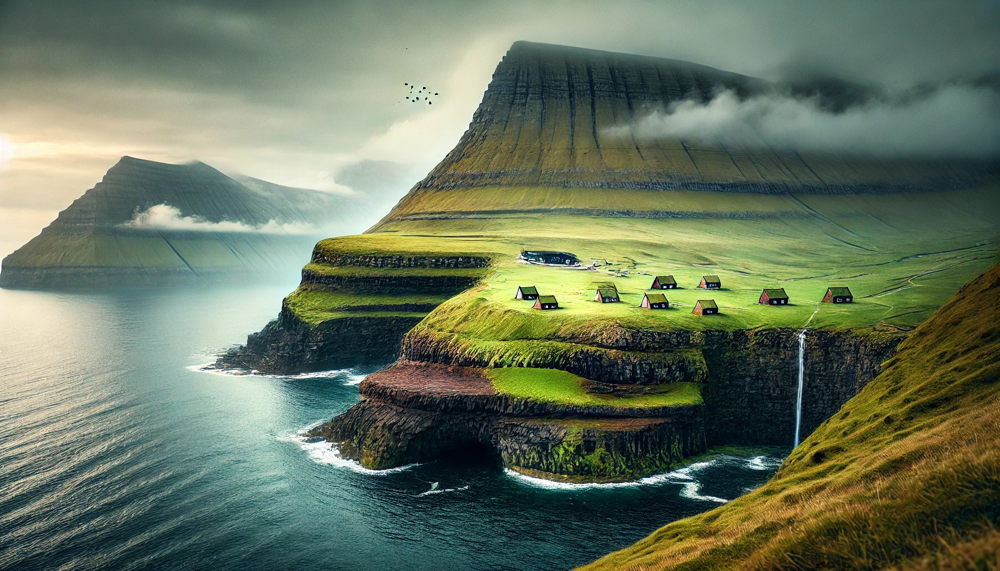

Home
About Us
Contact
Sign In
Sign up
Hover me
Fraoe Islands
1 / 3

2 / 3

3 / 3

❮
❯
Where is it?
Travel Tips
➡Best time to visit: Summer (June-August) is ideal for milder weather, blooming landscapes,
and longer daylight hours. Winter is also magical, with fewer tourists and a chance
to see the Northern Lights!
➡Getting Around: Renting a car is highly recommended as it’s the easiest way to reach scenic spots.
Be prepared for winding roads, tunnels, and occasional single-lane bridges.
Gas stations are limited, so plan ahead.
➡Weather Prep: The weather can change rapidly, even within an hour! Dress in layers and carry waterproof
jackets and shoes. Always check the local weather forecast
before heading out.
➡Respect the Landscape: The Faroe Islands have fragile ecosystems and unique wildlife, especially
puffin habitats. Stick to marked trails to preserve the land and avoid disturbing
the seabird colonies.
➡Budget-Friendly Stays: Accommodations can be pricey. Consider staying in guesthouses or Airbnb options
in villages. Camping is allowed, but check regulations,
especially in remote areas, as some regions have restricted access.
➡Embrace Local Customs: Faroese people are friendly yet reserved. Don’t hesitate to ask locals for advice
or directions—they’re usually happy to help! Learn a few
Faroese phrases if you can; it’s always appreciated.